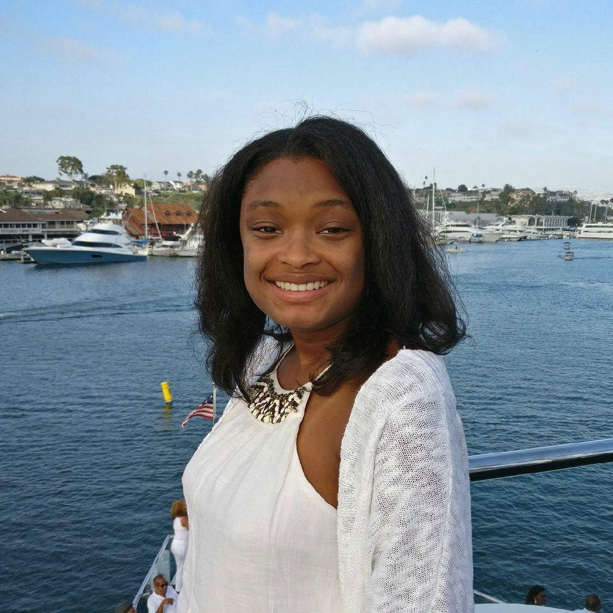

 |
Zindzi Griffin
Hello, I am Zindzi Griffin.
I am currently a sophomore computer science major.
I attend Spelman College.
I am interested in software engineering and UX research. My main goals with studying computer science are to change the face of technology using my computing skills. I hope to bridge the gap between race and gender gap in the tech space and create a space that is more inclusive of everyone.
I started studying computer science because I was interested in problem-solving and how I can use computer science to solve issues.I love being able to express my creativity through computer science. I hope to inspire other young girls to study computer science.
|